UT Student, I like to work with microcontrollers
I'm a big fan of Lady Gaga. For a class project I built a 5-DAC and an audio driver for the DAC, the extra credit was to encode a song to play on our embedded piano. I encoded the chorus of "Bad Romance", but it was still far from the real thing. Next, I expanded the DAC to 8-bit and tried using a Matlab script to convert an 8-bit PCM encoding into an array. I could do 2sec at 8kHz or 8sec at 32kHz before running out of space on the microcontroller. Either way, this was still far from the real thing, so the next step was to use external storage. My professor had existing code to play audio from .bin files on an SD card, so I used that, changing the 11kHz 8-bit he had to 8-bit 44.1kHz, although I had to resolder a bad resistor on my SD board. The next step was obviously to be able to play multiple songs. My professor's code only could read a specific file, so I used FatFS to list all files in the root SD directory so I could pick one. The trouble of converting my WAV music files to .bin was a little inconvenient, so I made a simple WAV decoder to read the WAV header so I didn't need to convert the files anymore. Around the same time, I was making a PCB for the microcontroller for another project (shown in "UTerraria"), so I switched to the internal 12-bit DAC, which I had designed an audio amp for on the PCB. At the end, I had 97 Lady Gaga songs (all songs from the main 7 albums and a few others), along with "The Monster Mash" because my friends secretly put it on my SD as a prank. The code is in my "MSPM0-Projects" repo, in the "iPod" folder.
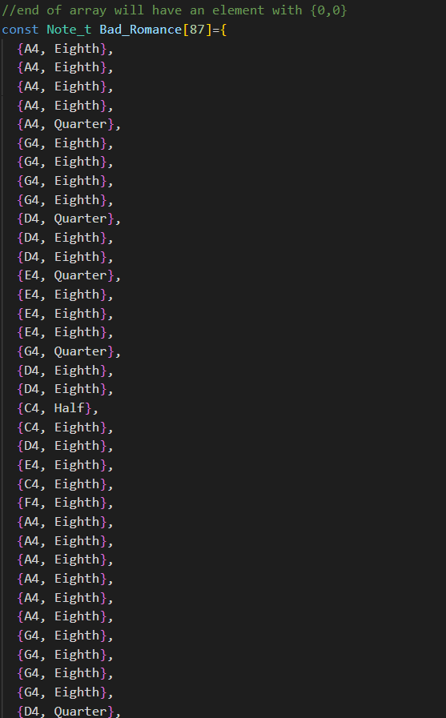
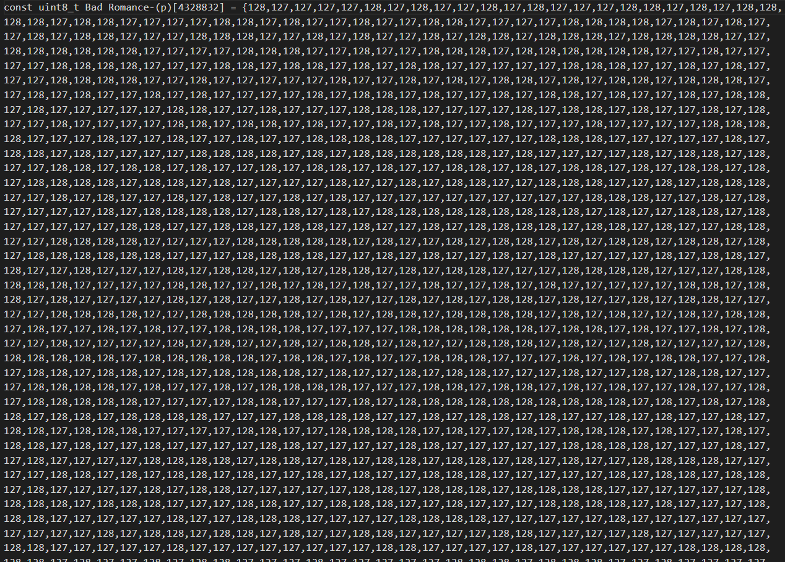
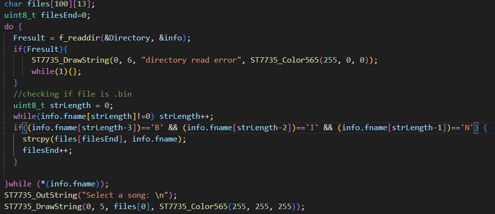
Our final project for the aforementioned class was a video game meant to run on the Launchpad, an MSPM0-based development board. First, I partnered with some other classmates to make a PCB that would make it easier to play our respective games. I wanted movement buttons, action buttons, a slide pot, and a menu button, so my schematic had those. We all merged our designs to a single schematic and then designed and ordered the PCB. Once I had my PCB assembled, I started working on my idea, a Terraria knockoff. My first goal was to get terrain rendering, since the whole world modification part depends on a good terrain implementation. I decided on having a single 8-bit integer represent every block in the terrain, and then define the behavior and texture for every number (sky is 0, dirt is 1, etc.). My first test clearly had work to do, but I could move around and modify blocks, pretty cool. Next, I made it so that the rendering system always had the player at the center, which took a bit of trial and error to get the math right. Then, I added gravity and collisions, but since my framerate was pretty low, I had to implement clipping detection logic. After that, I added mobs, which just follow the player and deal damage if their hitbox intersects the player's. I added multiple mobs, with varying hp and sprites. I already had some understanding of SD interfacing from my iPod project, so I made some code to write and load terrain data from the SD card to save worlds. Finally, I just did some polishing to make the game prettier and faster to run, to improve my chances of winning the game design competition. Out of the 100+ projects that competed in our class video game design competition, I made the superfinals. For more information, please refer here, I wrote a long technical explanation of what I did. I also have a less wordy technical presentation. The code is in my "MSPM0-Projects" repo, in the "ECE319K_Lab9" folder.
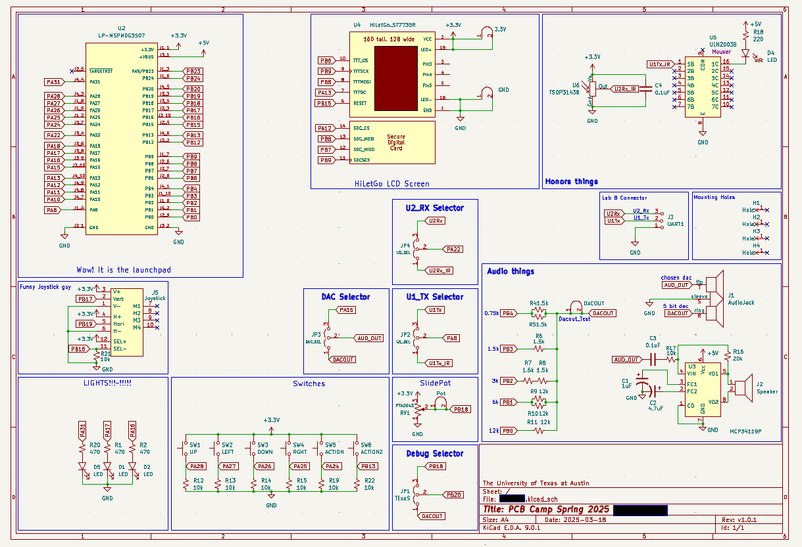
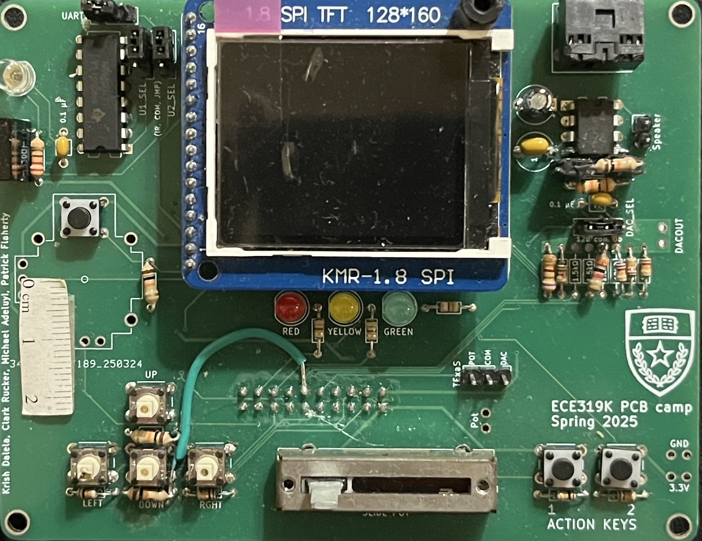
This was a pretty quick project between my friend and I. I had bought some old speakers from Goodwill, and my embedded iPod was playing really quietly on them. The main issue was that my microcontroller had a very low max power output, so we decided to make a power supply for the audio amp. My friend had an old transformer from a lamp, I got a power cable from a broken monitor, and then the rest of the components from the ECE checkout desk. The idea is to use a full bridge rectifier to make a rectified wave, and then use some capacitors to smooth the wave into a constant voltage. We ended up turning the 120Vrms wall electricity (170V peak-to-peak) into 14V DC (the transformer was probably a little less than 10:1). We then made an LDO circuit to step it down to 12V. After prototyping it on a breadboard, we designed, ordered, and assembled a PCB that does active audio amplification. Now, my microcontroller plays music throughout our apartment. Our MC34119 audio amp is only supposed to take 500mW though, maybe we should get a bigger one. Big thanks to Clark Rucker ("scrublam" on GitHub) for the help with designing the PCB.
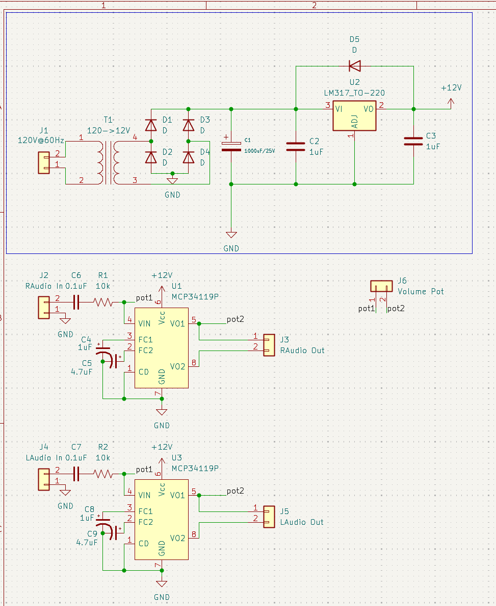
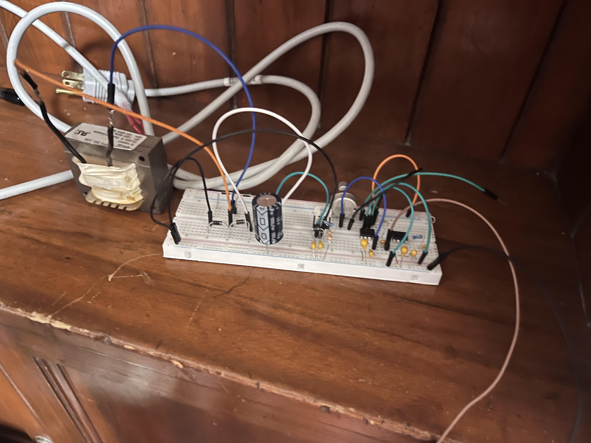
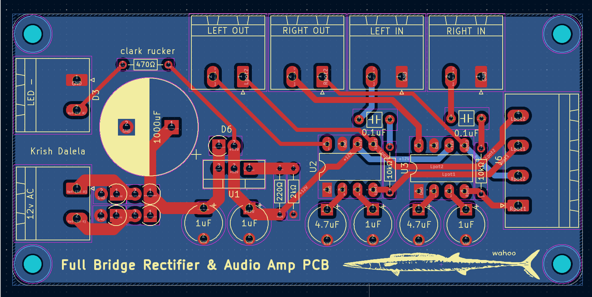
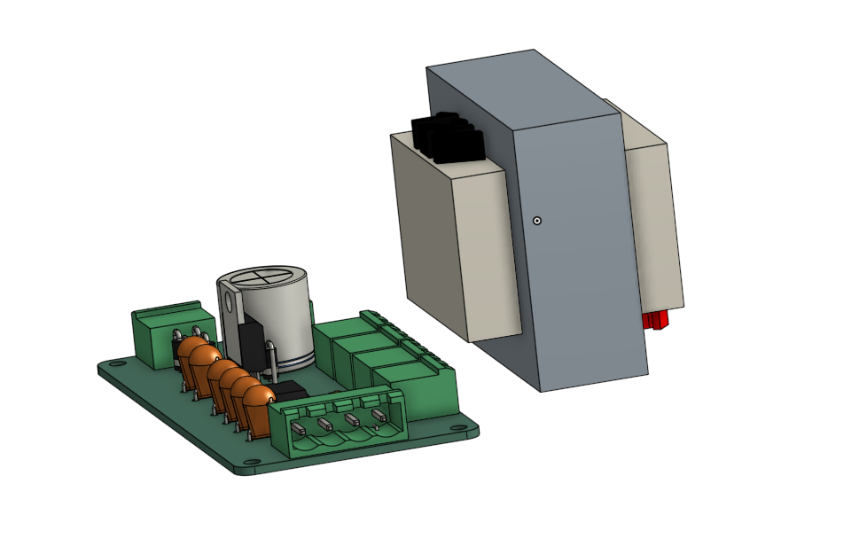
This is my latest project, as part of IEEE PES. I am making a 600W 12V DC -> 120V AC inverter to power our AC pumps and lights with our DC battery. The plan is to use a microcontroller (powered by the battery via a LDO circuit to provide 3.3V) to generate a PWM sine wave, which I can feed into transistors to make a switching current. Then, I use a low pass filter (ideal cutoff at 60Hz) to turn the PWM wave into a smooth sine wave. So far, I've designed a schematic in KiCad and am testing to see if it works in theory in LTspice. I've managed to make a circuit to generate a PWM sine wave, but I'm still trying to test the low-pass filter properly. This project isn't officially a PES project until next semester, so I'm doing this on my own right now. I don't have much power electronics experience, so please send me an email at krishdalela@utexas.edu if you want to help.
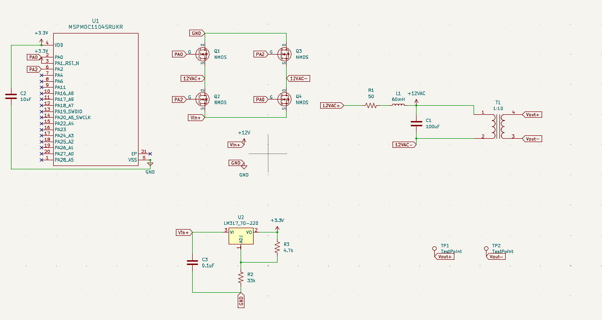
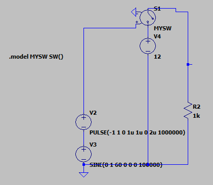
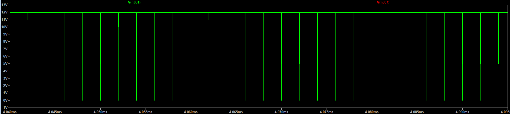
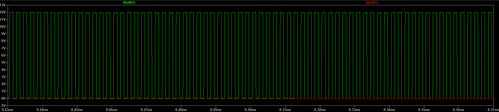
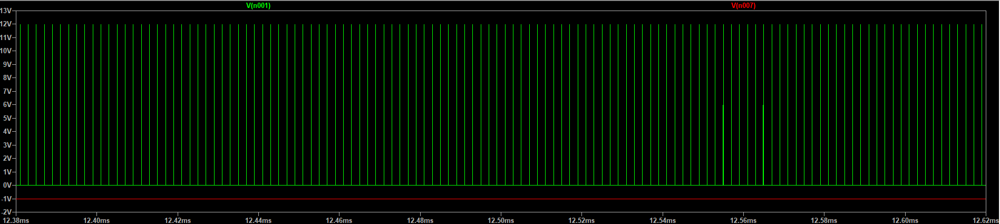
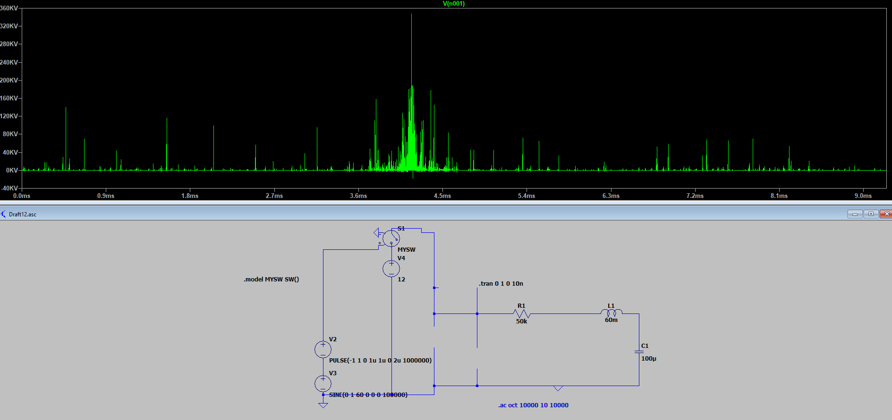